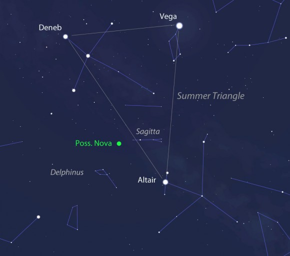
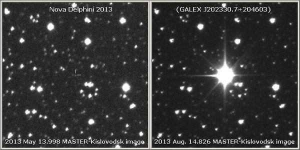
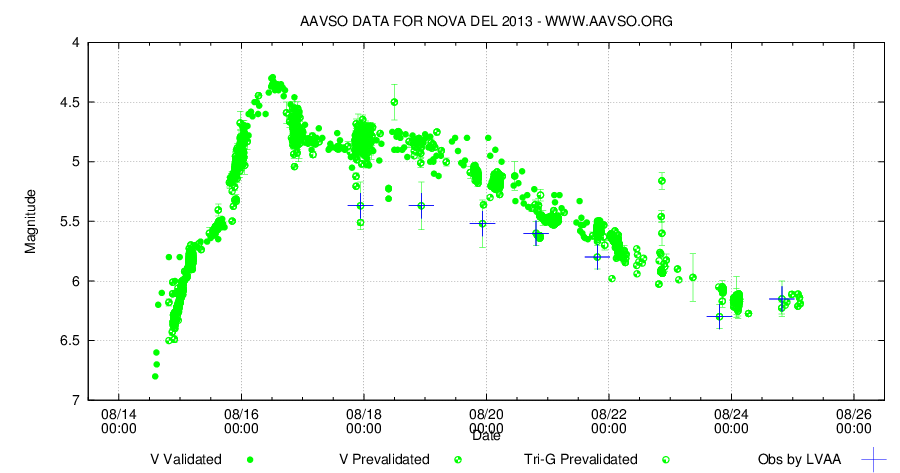

Новая Дельфина 2013
2013-08-14
Японский астроном-любитель Koichi Itagaki, используя 18
см телескоп, обнаружил и сфотографировал новую звезду в созвездии
Дельфина (Рядом с Лирой, Лебедем и Орлом). Это не где-то в южном
полушарии, а на удобном северном небе. У нас Лира бывает почти
в зените. Три яркие звёзды этих созвездий Денеб (Лебедь), Вега(Лира)
и Альтаир(Орёл) образуют известный
Летний треугольник
, который знают люди, даже далёкие от астрономии. Новая звезда
расположена ближе к Альтаиру, как показано на карте.

(c)Universetoday
По этой карте звезду легко найти в бинокль.
На страничке Nasa-Apod говорится, что ранее эта безымянная звезда видимо имела звёздную величину 17 (видно только в очень хороший телескоп). С 14 по 16 августа звездная величина новой уменьшилась с 6.8 (видно в бинокль) до 4.5 (видно невооружённым глазом). График яркости есть на сайте AAVSO. Звезду назвали Nova Delphini 2013 .

© Сеть телескопов MASTER, ГАИШ МГУ
Тысячи астрономов-любителей следили за новой звездой.
Денис Денисенко , сотрудник лаборатории космического мониторинга Государственного астрономического института имени Штернберга МГУ, участник сети телескопов MASTER: Это первая новая в 21 веке, которую в принципе можно было увидеть невооруженным глазом. Она входит в число 30 самых ярких новых звезд за все время наблюдений.

Яркость Новой Дельфина с 15 по 25 августа 2013 года
{kind=link}
К 23 августа Новая Дельфина 2013 ослабла, и стала видна только в бинокль.